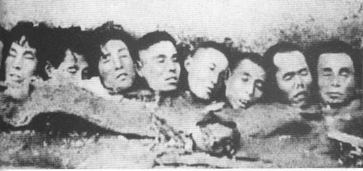
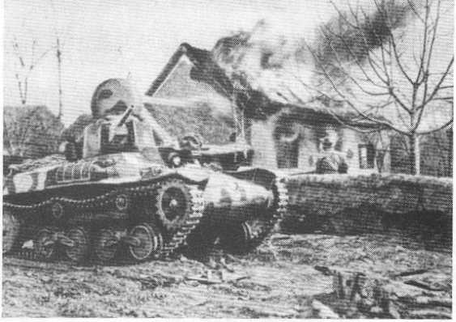

Book Gallery
Nanking fell to the Japanese on December 13, 1937. Here the ecstatic. Japanese celebrate by cheering on the walls of the city (Photo courtesy of Pictorial History Of Sino-Japanese War).

Japanese tanks rumbled through Nanking on the morning of December 13, 1937 (New China News Agency).
On December 12, the Japanese navy bombed and sank the USS Panay, an American gunboat, on the Yangtze River near the city of Nanking, even though it was packed with diplomats, journalists, businessmen, and refugees from Western countries (UPI/Corbis-Bettmann).
General Matsui Iwane salutes his victorious troops as he enters the walled city of Nanking (UPI/Bettmann).
An example of Japanese propaganda. The Japanese pasied this image all over Nanking--a poster displaying a kindly Japanese soldier holding a Chinese baby while giving food to his grateful parents. The posters urged the citizens, "Return to your homes! We will give you rice to eat! Trust and rely on the Japanese army, you can get help!" Many of these posters were found near homes in which atrocities had occurred. Japanese army planes also dropped leaflets promising, "All good Chinese who return to their homes will be fed and clothed. Japan wants to be a good neighbor to those Chinese not fooled by monsters who are Chiang Kai-shek's soldiers." After such drops, thousands of Nanking citizens left the Safety Zone to return to their homes (John Rabe Collection, Yale Divinity School Library).

As the Japanese moved across China, they rounded up thousands of women. Many of them were gang raped or forced into military prostitution (Politburo of Military Committee, Taipei).
The Japanese bound the wrists of young men in the city and loaded many of them onto trucks, where they were transported to the outskirts of Nanking for mass execution (Mainchi Shimbun).

December 16, 1937. Seventeen Japanese military police officers inspecting a large crowd of Chinese civilians so terrorized by the mass murder in the city that none dare raise any objection to the search (Central News Agency, Taipei).

The original caption reads: "This picture shows Japanese recruits at bayonet drill in Nanking after the capture of the Chinese capital. They are using Chinese prisoners for their targets. In the center an unfortunate prisoner (or should we say fortunate) has just received the death thrust. In foreground, a bound Chinese is being 'lightly' pricked with the bayonet in order to get him into position for the coup de grâce. As to the authenticity of the photo--it was sent to Look by W. A. Farmer of Hankow, who says the photograph was made by a Japanese soldier. The film was sent to Shanghai to be developed. Chinese employees in the Japanese-owned shop made extra prints and smuggled them out" (UPI/Bettmann).
Blindfolded and propped on two sticks, this poor man served as the living target for a Japanese officer's sword practice. Here an infantryman finishes the job with bayonet thrusts that continue even after the victim's death (Politburo of Military Committee, Taipei).
Five Chinese prisoners being buried alive by their Japanese captors outside Nanking after the fall of the Chinese capital. This is another picture that was sent to Look magazine by W. A. farmer after it was taken by a Japanese soldier and smuggled out by Chinese film shop employees who "did the natural thing in exceeding the printing order" (UPI/Bettmann).

Beheadings by sword were popular in Nanking. Here the camera captures the moment of a victim's decapitation (New China News Agency).
The severed heads of Nanking victims (New China News Agency).
The head of a Chinese soldier placed on a barbed-wire barricade outside Nanking, with a cigarette butt inserted between his lips as a joke (Alliance for Preserving the Truth of Sino-Japanese War).

In Nanking the Japanese turned murder into sport. Note the smiles on the Japanese in the background (Revolutionary Documents, Taipei).

The Japanese media avidly covered the army's killing contests near Nanking. In one of the most notorious, two Japanese sublieutenants, Mukai Toshiaki and Noda Takeshi, went on separate beheading sprees near Nanking to see who could kill one hundred men first. The Japan Advertiser ran their picture under the bold headline, "Contest to Kill First 100 Chinese with Sword Extended When Both Fighters Exceed Mark--Mukai Scores 106 and Noda 105" (Japan Advertiser).
Corpses of Nanking citizens were dragged to the banks of the Yangtze and thrown into the river (Murase Moriyasu).
Heaps of dead bodies wait for disposal on the wharves of Hsiakwan, the port suburb north of Nanking (Murase Moriyasu).
Japanese soldiers sometimes forced their victims to pose in pornographic pictures, which were kept as souvenirs of rape (courtesy of the Fitch family).
The Japanese bound this young woman to a chair for repeated attack (New China News Agency).
Nanking women were not only raped but tortured and mutilated (Modem China Publishing).
Arson destroyed one-third of Nanking during the massacre. Here Japanese troops set fire to a house in the suburbs (New China News Agency).
Japanese soldiers ride through a devastated neighborhood of Nanking (Yin and Young, The Rape of Nanking).
During the massacre thousands of Chinese refugees fled into the Nanking Safety Zone--war-free territory guarded by a handful of Westerners. The zone meant the difference between life and death for the remaining Chinese in the city and eventually housed more than three hundred thousand people (Nanking Municipal Archives).
The foreigners also established a rural safety zone outside Nanking (Ernest H. Forster, Yale Divinity School Library).
John Rabe, the Nazi hero of Nanking (Ursula Reinhardt).
John Rabe, chairman of the International Committee for the Nanking Safety Zone, standing with colleagues before zone headquarters at 5 Ninghai Road (Yale Divinity School Library).
A page (top) from John Rabe's diaries of the Nanking massacre (John Rabe Collection, Yale Divinity School Libiaty).
John Rabe's letter to Hitler (bottom), which he submitted along with a report and film of the atrocities. A few days later Rabe was arrested and interrogated by the Gestapo in Berlin (John Rabe Collection, Yale Divinity School Library).
Dr. Robert Wilson, the only surgeon in Nanking during the massacre (Yale Divinity School Library).
Dr. Wilson examines a gang-rape victim whose head was almost severed by the Japanese. In a deserted schoolhouse two soldiers struck this woman ten times with a bayonet--once on the wrist, once on the face, four times on the back, and four times on her neck, which slashed the muscles down to the vertebral column (John Magee).
Scenes from Nanking University Hospital, where Wilson worked. This teenage boy's head was charred black after the Japanese doused it with gasoline and set it on fire (John Magee).
This fourteen-year-old boy was imprisoned by the Japanese, starved, and then severely beaten with an iron bar when he begged to go home (John Magee).
Li Xouyin, who barely eluded rape after fighting three Japanese soldiers and enduring thirty-seven bayonet wounds. Seven months pregnant during the fight, she suffered a miscarriage in the hospital. She did not recover from her wounds for another seven months (John Magee).
Minnie Vautrin, "The Living Coddess of Nanking" (Courtesy of Emma Lyon).
Miner Searle Bates history professor at Nanking University and chairman of the International Committee after May 1939 (Yale Divinity School Library).
ORGANIZERS OF THE NANKING SAFETY ZONE
Christian Kröger (top left), German engineer and Nazi member of the International Committee. He served as treasurer between December 1937 and February 1938 (Peter Kröger), John Gillespie Magee (top right), Episcopalian minister who served as chairman of the International Red Cross Committee of Nanking during the massacre. An amateur filmmaker, Magee recorded many important images from Nanking University Hospital (Yale Divinity School Library). Lewis Strong Casey Smythe (opposite, top left), a secretary of the International Committee and author of the study "War Damage in the Nanking Area, December 1937 to March 1938" (Yale Divinity School Library). Ernest Forster (opposite, top right), Episcopalian missionary and one of the secretaries of the International Committee (Yale Divinity School Library). James Flenry McCallum (opposite, center), member of the United Christian Missionary Society and one of the treasurers of the Safety Zone. During the massacre McCallum drove an ambulance through the city to chauffeur patients home from the hospital (Disciples of Christ Historical Society). Wilson Plumer Mills (opposite, bottom left), the Presbyterian missionary who first suggested that the Nanking Safety Zone be created (Angie Mills). George Ashmore Fitch (opposite, bottom right), head of the YMCA in Nanking and an administrative director of the International Committee. He smuggled his and John Magee’s films of Nanking atrocities out of the city (Edith Fitch Swapp).

During the war crimes trials in 1946, some of the dried bones from mass graves were unearthed for inspection by Chinese officials (Alliance for Preserving the Truth of the Sino-Japanese War).